- GnuCash - 財務管理ソフトウェア
- GnuCash とは何ですか。
- マニュアルはありますか。
- 各ディストリビューションへのインストール
- ソースからインストールするには？(make install)
- ソースからインストールするには？(CheckInstall)
- バージョン2.2.0 と以前のバージョンとの変更点
- 初期設定の手順は？（およびスクリーンショット）
- 家計簿として実際に使ってみましょう。
- 複式簿記による入力とは？
- 複式簿記による管理の長所は？
- 入力はどのようにしますか（入力例）。
- 「資金移動」機能で便利に記帳する。
- 科目が英語なので良く分からないのですが。 (v.2.2.1 以前)
- 複数の銀行に幾つも口座があっても管理できますか。
- 勘定科目の説明らんに日本語入力できません。 (SCIM-Anthy)
- 現金（財布の中のお金）はどうやって記帳しますか。
- 「プレースホルダー」とは何ですか。
- 将来の取り引きを予約する。
- 過去に遡って記帳したり、訂正したりできますか。
- 取り引きを用紙に印刷するには？
- 画面の表示項目を追加・削除するには？
- メニューをすべて英語で表示したい時は？
- バックアップがたくさん出来て困ります。
- 銀行口座の「電子明細」対応について
- （参考）勘定科目対訳一覧
- 関連記事
GnuCash とは何ですか。
これは、GNOMEデスクトップ用のフリーな「財務管理用ソフトウェア」です。個人の現金出納帳の役割を勤めることはもちろん、複式簿 記を採用しているので小規模企業の財務管理を行うこともできます。
- GnuCash オフィシャル・サイト http://www.gnucash.org/
マニュアルはありますか。
- GnuCash チュートリアル・コンセプト ガイド
http://www.gnome.gr.jp/~kusano/gnucash/guide/ - GnuCash Help Manual（英語）
http://svn.gnucash.org/docs/help/help.html
各ディストリビューションへのインストール
コマンドラインより通常のインストールを行うには、http://www.gnucash.org/download.phtml#distribution あるいは以下の例を参考にしてください。ただし、最新の公式版よりもバージョンが古い場合があります。
- Debian Linux/ Ubuntu
# apt-get install gnucash
Debian 6.0 (Squeeze) の場合には GnuCash 2.2.9、5.0 (Lenny) では GnuCash 2.2.6、Debian 4.0 (Etch) の場合には GnuCash 2.0.5 が用意されています。 - Fedora Linux
# yum install gnucash
- Mandriva Linux
# urpmi gnucash
- Vine Linux
# apt-get install gnucash
ソースからインストールするには？(make install)
バージョン 2.2.3 をソースからビルドしてインストールする場合、開発環境が必要となります。ディストリビューションによっては、デフォルトで開発環境を含 まないものがあり ます。
開発環境をインストール (Debian)
デフォルトでは開発環境は入っていません。以下の手順で、開発（ビルド）に必要なツール一式が追加できます。
# apt-get install build-essential devscripts
# apt-get build-dep gnucash
この作業では、こ のような多数 の ツールがインストールされることになります。
ソースからビルドしてインストール
開発環境が整ったら、以下の手順でインストールします。gnucash-2.2.3.tar.gz をダウンロードした場合です。
$ tar zxvf gnucash-2.2.3.tar.gz
$ cd gnucash-2.2.3
$ ./configure
$ make
# make install
ソースからインストールするには？(CheckInstall)
CheckInstall でインストール
CheckInstall とは、インストール追跡プログラムと呼ばれています。RPM/DEB に変換します。次のように作業します。実際の作業例は、こ ちらを参照し てください。
$ tar zxvf gnucash-2.2.3.tar.gz
$ cd gnucash-2.2.3
$ ./configure
$ make
# checkinstall
「CheckInstall は、あなたのインストール用スクリプト ("make install" "make install_modules", "setup" など) によって作成あるいは修正された全ファイルの記録を取り、標準的なバイナリパッケージを構築してそれをシステムにインストールすることに よって、ディストリビューションの標準的なパッケージ管理ユーティリティでアンインストールできるようにしてくれます。」-http://packages.debian.org/lenny/checkinstall
- 注意：2008.02.20 現在、CheckInstall は debian Etch 用の配布がありませんが、開発元の公式サイトより .debバイナリーが入手できます。
- Slackware / RPM / Debian binary packages
- デビアン(Debian)/自動的に deb パッケージを作ってくれる checkinstall
gnucash_2.2.3 で CheckInstall できません。(Debian Etch)
開発環境として、gcc が必要です。
# apt-get install gcc パッケージリストを読み込んでいます... 完了
依存関係ツリーを作成しています... 完了
以下の特別パッケージがインストールされます:
binutils gcc-4.1
提案パッケージ:
binutils-doc manpages-dev automake1.9 libtool flex bison
gcc-doc
gcc-4.1-doc
gcc-4.1-locales libc6-dev-amd64 lib64gcc1 lib64ssp0
推奨パッケージ:
libmudflap0-dev
以下のパッケージが新たにインストールされます:
binutils gcc gcc-4.1
アップグレード: 0 個、新規インストール: 3 個、削除: 0 個、保留: 0 個。
3071kB 中 0B のアーカイブを取得する必要があります。
展開後に追加で 8692kB のディスク容量が消費されます。
続行しますか [Y/n]? y
gnucash_2.2.3-1_i386.deb がインストールできません。(Debian Etch)
# dpkg -i gnucash_2.2.3-1_i386.deb
未選択パッケージ gnucash を選択しています。
(データベースを読み込んでいます ... 現在 90370 個のファイルとディレクトリがイン ストールされています。)
(gnucash_2.2.3-1_i386.deb から) gnucash を展開しています...
dpkg: gnucash_2.2.3-1_i386.deb の処理中にエラーが発生しました (--install):
`/usr/bin/ld' を上書きしようとしています。これはパッケージ binutils にも含まれ ています
dpkg-deb: サブプロセス paste がシグナル (パイプが切断されました) によって強制終 了しました
以下のパッケージの処理中にエラーが発生しました:
gnucash_2.2.3-1_i386.deb
この原因は、binutils との設定でコンフリクトが発生するためです。当面開発環境を必要としないのなら、binutils を削除すればこれを回避できます。
# apt-get remove binutils
パッケージリストを読み込んでいます... 完了
依存関係ツリーを作成しています... 完了
以下のパッケージは「削除」されます:
binutils gcc gcc-4.1
アップグレード: 0 個、新規インストール: 0 個、削除: 3 個、保留: 0 個。
0B のアーカイブを取得する必要があります。
展開後に 8692kB のディスク容量が解放されます。
続行しますか [Y/n]? y
バージョン 2.2.0 と以前のバージョンとの変更点
バージョン 2.2.0 では、2.0 以前のバージョンで作成したファイルを読み込むことが可能です。一方、新しいバージョンで作成したファイルを 2.0 以前の古い GnuCash を使って読み込むことは無理です（読み込み時エラーが発生します）。
- What's New in GnuCash
2.2.0?
"Data file notice: In version 2.1.2 the format for scheduled transactions in the data file was changed. Files using the old format will be read without problems by this new version, but the new version of GnuCash only writes the new format. The new file format cannot be loaded by older versions of GnuCash." - http://www.gnucash.org/index.phtml
初期設定の手順は？（およびスクリーンショット）
インストール時の設定 (V.2.2.3)
バージョン 2.2.3 をソースからビルドしてインストールした場合は、以下の手順が必要です（各ディストリビューションから配布されるバイナリー・パッケージ をインストールす る場合は要りません）。
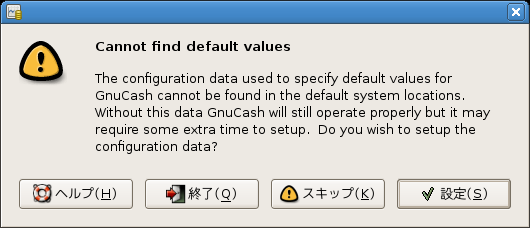
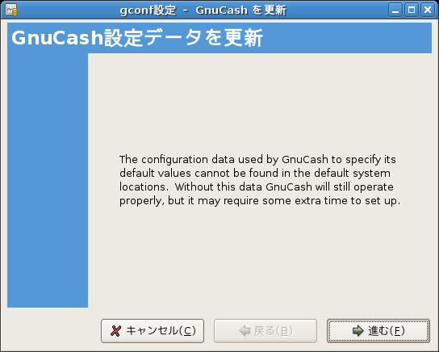
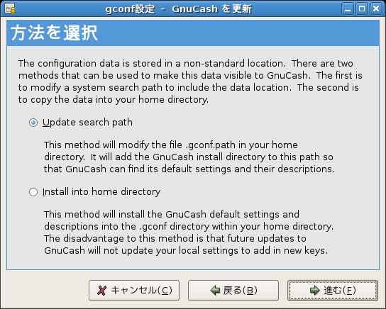
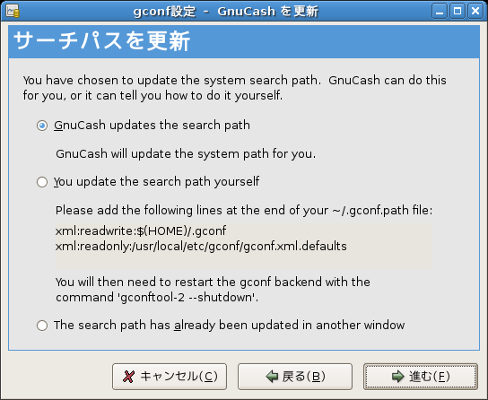
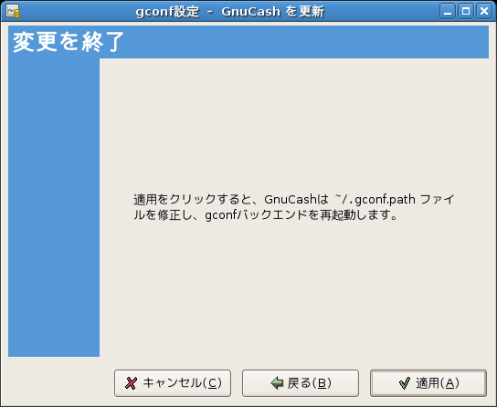
インストール後の設定
使い始める前に、勘定科目の登録設定を行う必要があります。数種類のひな型が用意されています。バージョン 2.2.1 では日本語への移植が相当進んでいるので、勘定科目の説明を日本語に置き換えるなど、ごく一部を手直しするだけでそのまま利用できます。 以下のスクリーン ショットは、バージョン 2.2.3 のものです。
- インストール後最初の起動時に、新規作成を実行します。
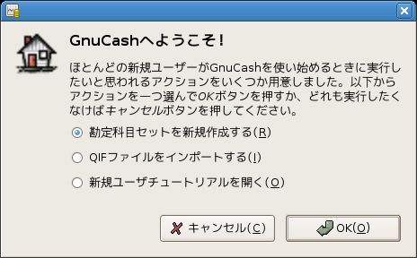
あとから新規作成する場合は、ファイルメニューより新規作成を選択します。
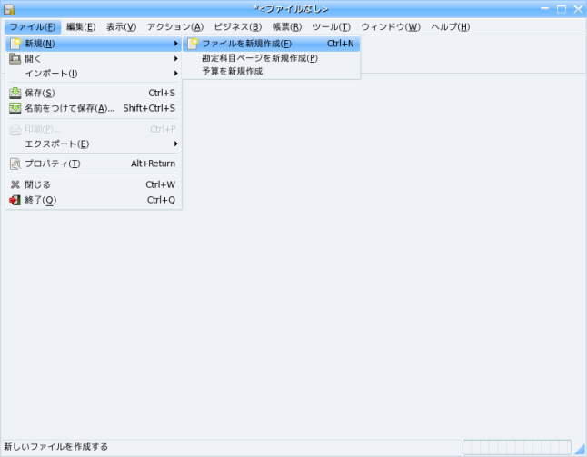
- 自動的にウィザードが立ち上がるので、それに従って新規勘定科目を設定します。
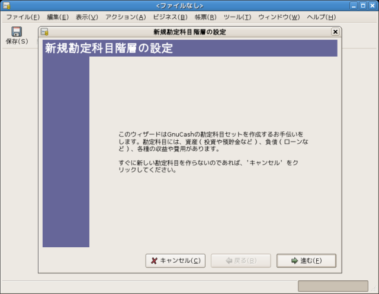
- この画面で、通貨を日本円に設定します。
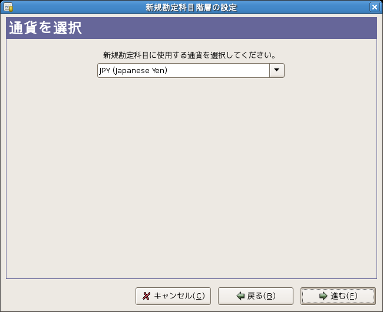
- テンプレートの中から選択できます。ここでは「一般的な勘定科目集」(Common Accounts) を選択しています。
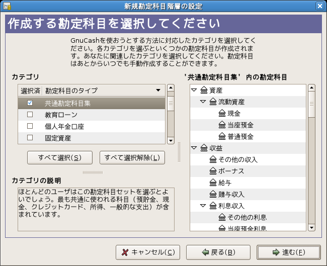
- 選択した画面を確認します。
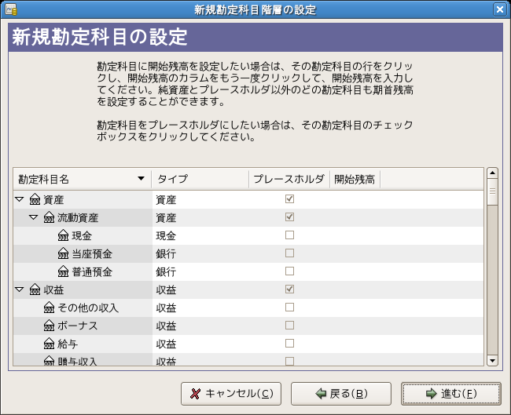
- 科目設定のウィザードを終了させます。
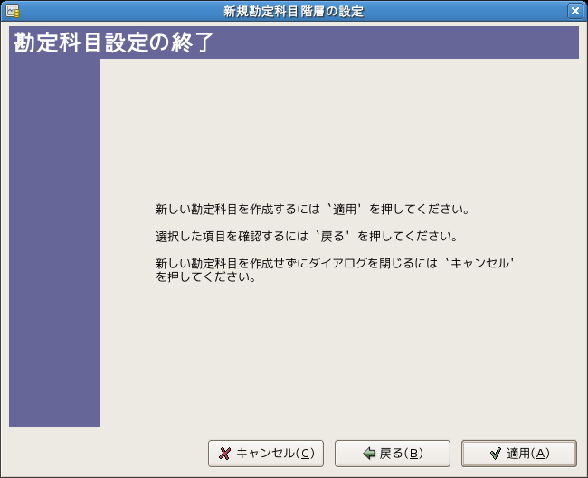
- 選択した勘定科目が表示されます。あとは、実際の金額を入力して現金管理を行ってください。

- 【補足事項】
バージョン 2.2.1 では、下記のスクリーンショットのとおり、科目・説明らんとも英語で表示されます。勘定科目の説明らんを日本語に置き換えるには、マ ウスで選択してくださ い（編集ボタンより、科目名を日本語に変更することも可能です）。以上で初期設定は終了です。不要な科目は自由に削除可能です。
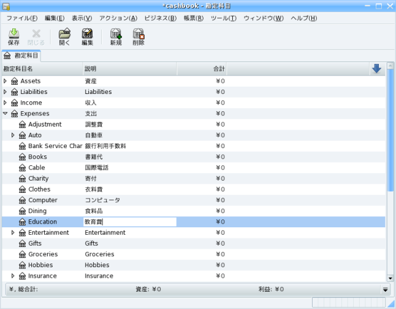
家計簿として実際に使ってみましょう。
複式簿記による入力とは？
Linux とは関係ないことですが、GnuCash を利用するに当たって、簿記について幾分理解があった方が良いと思われますので、以下簡単に説明します。
通常の家計簿の大半は、金銭の一時的な出入りを記帳するだけの簡単なものであって、小遣い帳と似通った体裁が採用されています。これは 単式簿記と呼ばれます。
一方、GnuCash は、「複式簿記」の考え方をもとにして入力・管理します。しかしながら、実際の作業においては、「資金（お金）の出所」と「資金の行先」 を入力するだけです。それぞれの科目が、「収入」「支出」「資産」のどれに当たるかという常識的な理解があれば足ります。荒っぽい言い方をすれば、初心者 に債務と債権を連想させ混乱を招くだけの「借方」「貸方」という会計用語さえ覚える必要はありません。GnuCash というソフトウェアの内部で入力結果を自動処理してくれるので、たとえ貸借不一致があった場合でも画面上でそれが表示され、入力の修正を 促してくれます。
なお、複式簿記の概念や考え方については、次のウェブ・ページが参考になります。
複式簿記による管理の長所は？
日常の現金のやり繰りを管理するだけの小遣い帳と違い、預金やローン、クレジット支払いなど、場合によっては複雑な一連のお金の流れを 総合的に把握できます。したがって、家計をより正確に管理することが可能となります。
入力はどのようにしますか（入力例）。
参考までに、いくつか例示しておきます。小遣い帳と違って、同じ金額を2つの異なる勘定科目に入力するところがミソです。金銭の一連の 流れ（出入り）を思い浮かべれば良いでしょう。
- 給料が通帳に振り込まれたとき
給与収入として受け入れ、同額を銀行口座に計上します。収入 (salary) - ￥200,000
貯蓄預金 (saving account) - ￥200,000 - 預金口座からお金を引き出したとき
口座勘定から金額を減らし、同額を現金勘定に計上します。貯蓄預金 (saving account) - ￥50,000
現金 (cash in wallet) - ￥50,000 - 食料品を購入したとき
現金勘定から金額を減らし、同額を食料品代に計上します。現金 (cash in wallet) - ￥3,000
支出 > 食料品代 (dining) - ￥3,000
「資金移動」機能で便利に記帳する。
GnuCash は複式簿記を採用しているため、上記項目で説明したとおり2つの異なる勘定科目に記帳する必要があります。しかし、実際には「資金移動」 の機能を使えば、 一度の記帳で済ますことができます。
例えば、食費で支払ったお金を記帳する場合、「食費」または「現金」のいづれか一方の勘定科目を開き、資金移動を行います。資金移動の 入力らんを選 択すると現れる□をクリックすると、科目の一覧が表示されるので、その中から資金の移動先を選択します。
科目が英語なので良く分からないのですが。(v.2.2.1 以前)
もともと英語圏の慣習に従ったレイアウトとなっていますので、日本国内では一般的でない項目（勘定科目）も含まれています。
不要な科目は削除すると良いでしょう。また、分かりにくい科目はローマ字や日本語に置き換えると良いでしょう。
（例）「Savings Account」 → 「Bank」 あるいは 「銀行」
- バージョン 2.2.3 では、勘定科目の標準表示が日本語になりました。
複数の銀行に幾つも口座があっても管理できますか。
はい。予め用意されているサンプルでは、貯蓄口座は1つしか用意されていません。けれども、貯蓄口座に「子勘定科目」を追加すれば、複 数の口座を管理することか可能となります。
- （例）Bank A、Bank B、Bank C、・・・
複数の銀行口座を管理するのはめんどうですが、GnuCash はこうした処理でさえ比較的容易に行えます。
勘定科目の説明らんに日本語入力できません。(SCIM-Anthy)
バージョン 2.2.3 では、説明らんへ直接日本語で入力できないようです。英語入力は問題ありません。
どうしても説明らんへ記入したいときは、デキストエディタで文字列を入力し、それをコピー＆貼りつけすることで対処できます。
現金（財布の中のお金）はどうやって記帳しますか。
初めて使う際、手元の残高を入力するには、現金の科目に入力するだけでは「貸借不一致」が生じます。
科目「純資産」＞「開始残高」に金額を入れて、同じ金額を科目「現金」にも入力してください。
「プレースホルダー」とは何ですか。
勘定科目の設定項目には、「プレースホルダー」という項目があります。これにチェックを入れると、その科目は下位の勘定科目をまとめる ホルダー（ディレクトリ）の役割を果たすだけになります。したがって、この設定をした科目には、取り引き入力することはできません。
将来の取り引きを予約する。
記帳する日付を将来の特定の日に設定することで、その日の取り引きを予約することができます。入力する際、カレンダーより予約日を選択 します。
実際に予定した日が到来するまでは、入力した金額が帳簿に反映されない仕組みになっています。
過去に遡って記帳したり、訂正したりできますか。
はい。紙の家計簿と違い、自由に追加や訂正が可能です。
過去にあった取り引きを追加する場合は、上記項目の場合と同様、カレンダーから特定の日を選択し、新規で取り引きを追加します。入力が 完了すれば、 自動的に時系列で並び替えられます。
また、記帳済みの金額を訂正するには、金額欄をそのまま上書きしてください。わざわざ取り引きをいったん削除し、入力し直す必要はあり ません。
取り引きを用紙に印刷するには？
- メニューより [帳簿] > [取引出納帳] を開きます。
- メニューより [ファイル] > [印刷] を選択します。
- 印刷を実行します。
[ファイル] > [エクスポート] より、ウェブページ(HTML)形式のファイルとしてエクスポートすることもできます。この場合、使用しているブラウザから直接印刷する ことが可能となります。
画面の表示項目を追加・削除するには？
勘定科目の画面に表示する項目は、予め用意されたうちから自由に追加・削除できます。科目先頭の項目名の右端にある↓ボタンを押し、一 覧から追加する項目にチェックを入れます。不要な項目はチェックを外します。
メニューをすべて英語で表示したい時は？
GnuCash を複数のユーザーで利用する際、デフォルトの言語が英語で表示されないと困るときは、コマンドラインから直接起動してください。システム 全体のロケールを変更する必要は全くありません。
$ LANG=C gnucash
バックアップがたくさん出来て困ります。
標準の設定では、バックアップ・ファイル（ログなど）が一定期間ごとに自動的に作成されます。バックアップを極力作成したくないとき
は、設定変更します。
[メニュー]-[編集]-[設定]-[全般] より [ファイル]の項目で次例のように変更します。
自動保存期間 0分
ログファイル保持期間 1日
銀行口座の「電子明細」対応について
.ofx形式の電子明細をインポートする機能があります。電子明細の対応金融機関一覧については、次のリンクを参照してください。
（参考）勘定科目対訳一覧
GnuCash 2.2.1 の勘定科目は英語表記なので、科目の対訳一覧（私訳）を載せておきます。
関連記事
HOME